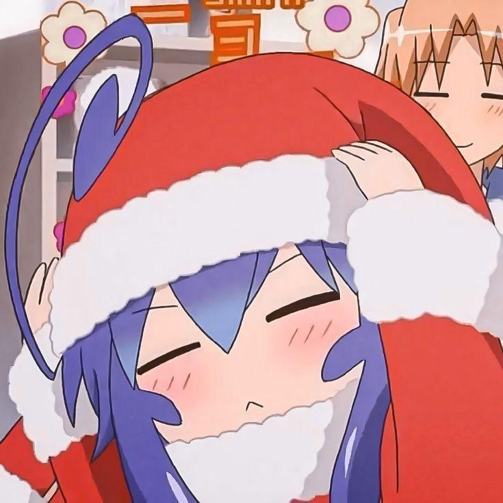

Duelo multiplayer
Enfrente outros jogadores em batalhas estratégicas usando ações e defesa em tempo real. Um dos sistemas de PvP mais completos em bots brasileiros.

Bot com jogos diferentes, a Tsumiki é um bot que você não viu ainda! 🌸
✦ Sobre
A maioria dos bots oferece moderação, música e comandos básicos. O Tsumiki Bot nasceu para fazer algo diferente: criar diversão, competição e interação real entre os membros do seu servidor.
Transforme seu servidor em um lugar onde sempre existe algo para fazer.
✦ Recursos exclusivos
Enfrente outros jogadores em batalhas estratégicas usando ações e defesa em tempo real. Um dos sistemas de PvP mais completos em bots brasileiros.
O único bot brasileiro capaz de encontrar animes usando os nomes do famoso site Mal Traduzido. Procurou pelo nome errado? A Tsumiki entende.
Descubra a compatibilidade entre membros e crie momentos engraçados para a comunidade.
Blackjack (21), Forca, Quiz, Trivia, Adivinhação, Pedra-Papel-Tesoura, Par ou Ímpar, Caça-Níquel e muito mais.
Beijos, abraços, tapas, carinho e outras formas de interação para movimentar o chat.
Clima, informações de usuários e servidores, banners, avatares, perfis da Steam, livros e muito mais.
✦ Grimório Neko
Consultas, estatísticas, perfis e dados gerais. Digite .help <comando> no Discord para ver os argumentos completos.
.helpCentral interativa de feitiços do Grimório Neko, ou as instruções de uso de um comando específico.
.steamConsulte jogos na loja ou exiba perfis estilizados da Comunidade Steam com papéis de parede, insígnias e contadores.
.malPesquise animes e mangás com sinopse em português, capas HD, trailer e navegador de temporadas integrado.
.bookPesquisa livros na Open Library com sinopse traduzida, capas em alta definição e seleção interativa.
.gamerPerfil de um jogador em vários jogos: Valorant, osu!, Honkai: Star Rail, Brawlhalla, Genshin, LoL, Minecraft, Roblox, Chess.com, Lichess, Dota 2 e Overwatch 2.
.userinfoFicha digital completa de um usuário com badges, cargos, permissões, conexões, multimídia e economia.
.serverinfoFicha detalhada do servidor atual com estatísticas de membros, canais, boosts e links de mídia.
.upscaleAprimora e dobra a resolução de uma imagem (2x) com filtro de nitidez direto na memória.
.weatherMostra a temperatura de determinada região.
.serverMostra os servidores em que a Tsumiki está presente, com páginas navegáveis.
.pingMostra a latência.
.uptimeMostra há quanto tempo o bot está ligado.
.politicaExibe a Política de Privacidade e Tratamento de Dados do bot. Ler aqui →
.termosExibe os Termos de Uso, Política de Operação e Governança do bot. Ler aqui →
✦ Diário de desenvolvimento
A Tsumiki não para de crescer. Veja o que mudou em cada versão.
Novidades
Melhorias
.steam agora busca informações em português, incluindo jogadores ativos.Correções
.mal finalmente foi corrigido após a troca da API utilizada.✦ Por que a Tsumiki?
Já são 23 servidores se divertindo com ela. O seu pode ser o próximo! 🌸